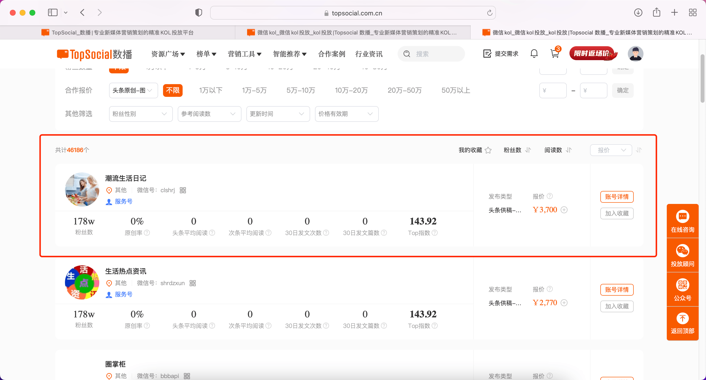

1、新增清理规则：清理近180天未更新推文的账号。若入库时间小于60天则不做清理
2、调整微信粉丝测算阈值，由粉丝数小于1w进行测算，修改为当粉丝数小于3000时进行测算
需求：
1、粉丝测算阈值修改为3000
2、在粉丝测算后，针对于粉丝数依旧小于3000的账号，进行依据TOP指数，填充对应粉丝数区间随机数。例如：某账号粉丝测算后，粉丝数仍然小于3000，该账号top指数为1300，则给该账号粉丝数在150w—300w区间填充一个随机数。
微信粉丝数<=3000时，按以下规则测算粉丝数
1、取该账号近30篇头条文章，计算头条平均阅读数、头条平均点赞数，按区间推算粉丝数
a、头条平均阅读数＜10万，预估粉丝数=头条平均阅读数/1.5%；
b、头条平均阅读数≥10万，头条平均点赞数<100，预估粉丝数=头条平均阅读数/1.8%
c、头条平均阅读数≥10万，头条平均点赞数100≤x<200，预估粉丝数=头条平均阅读数/2%
d、头条平均阅读数≥10万，头条平均点赞数200≤x<300，预估粉丝数=头条平均阅读数/2.5%
e、头条平均阅读数≥10万，头条平均点赞数300≤x<500，预估粉丝数=头条平均阅读数/2.8%
f、头条平均阅读数≥10万，头条平均点赞数≥500，预估粉丝数=头条平均阅读数/3%
2、每7天测算一次；